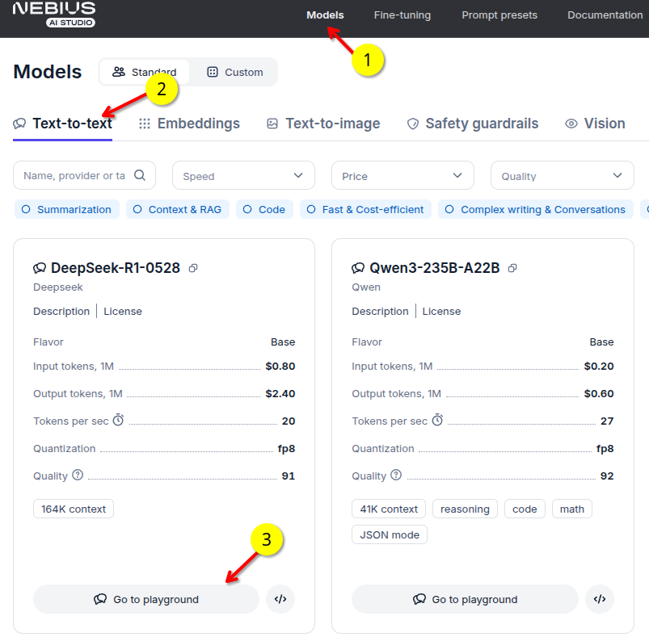
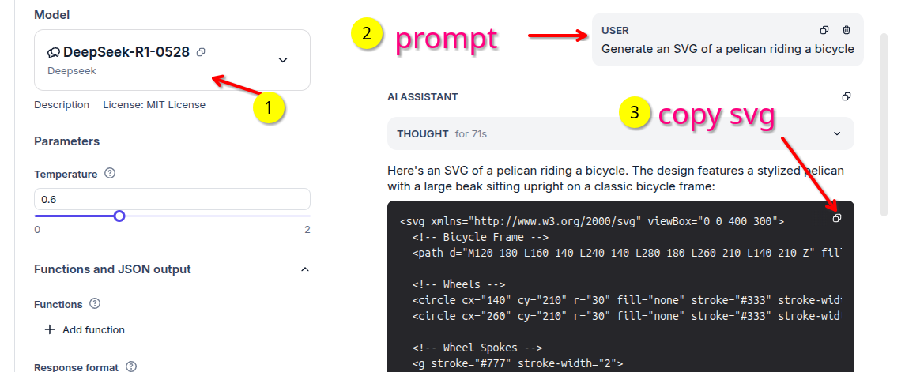

Pelican Riding a Bicycle - A fun vibe benchmark
This is inpired by Simon Willison's experiment called pelican riding a bicycle. It has become a cool vibe benchmark to evaluate LLMs.
Original github repo: simonw/pelican-bicycle
How to run it
It is very simple. Issue the the following prompt on playground of any model (text to text model)
Generate an SVG of a pelican riding a bicycle
It will generate a SVG code snippet. Copy it and save it as an svg file (e.g. image.svg)
See the screenshots below.


You can view SVG file - at svgviewer.dev (and can convert to PNG ..etc) - open in any modern browser - and modern graphic programs.
Generated Images
You can find generated images here.
Annotated images (with model names) can found in in images/annotated
Qwen3-235B-A22B-Instruct-2507.SVG (png)

DeepSeek-R1-0528-1.svg (png)
{kind=link}

Handy Scripts
SVG --> PNG
You can also convert SVG into other image formats like PNG. Here is how to do it in command line
## using Image Magic's convert
convert input.svg output.png
## Using inkscape
inkscape --export-type=png --export-filename=output.png input.svg
Batch conversion of SVG --> PNG
convert2png.sh can convert multiple SVGs into PNG. It also generates 'annotated' PNGs with model name. This is handy to identify which images were generated by which model
Usage:
./convert2png.sh images/Qwen3-235B-A22B-*.svg
Here is an example of generated PNGs (plain and annotated) 😀


Combining images
combine-images.sh is a handy script that can combine multiple images into a single image. Handy to create a A/B comparison image.
Usage:
./combine-images.sh -o combined.png a.png b.png
## to lay images out in a 2x2 grid
./combine-images.sh -o combined.png --layout 2x2 a.png b.png c.png d.png
Here as an example of generated combined image comparing Qwen3-235B-A22B and Qwen3-235B-A22B-Instruct-2507 models

References
- github: simonw/pelican-bicycle